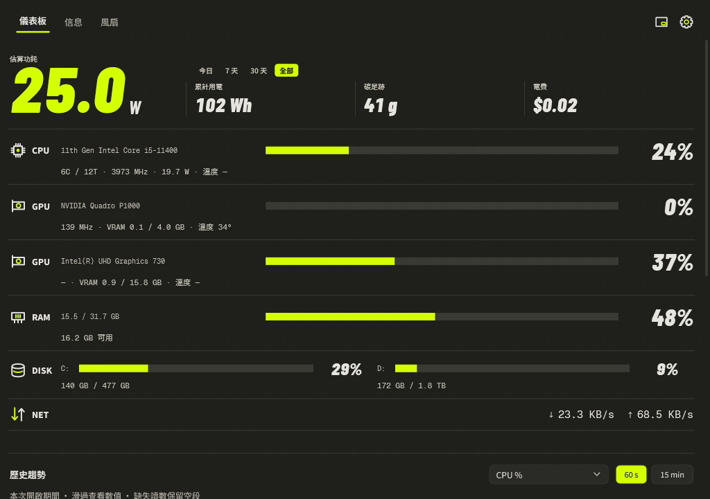
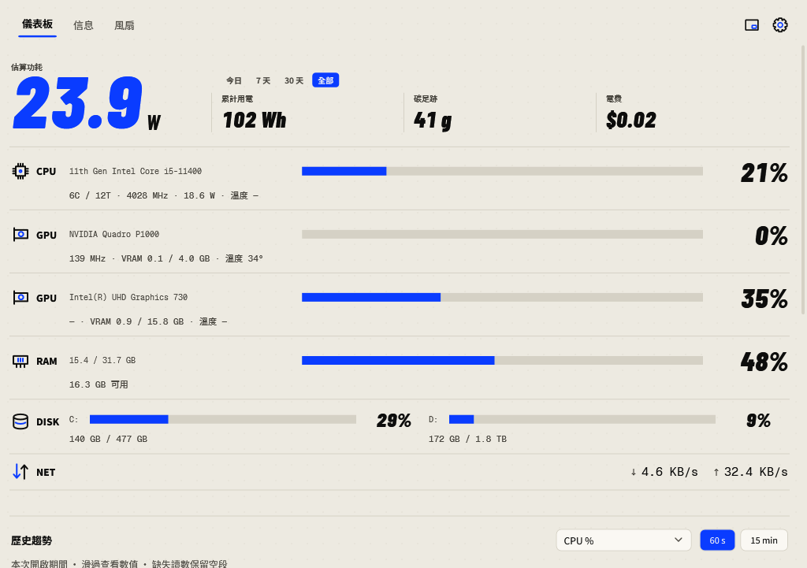
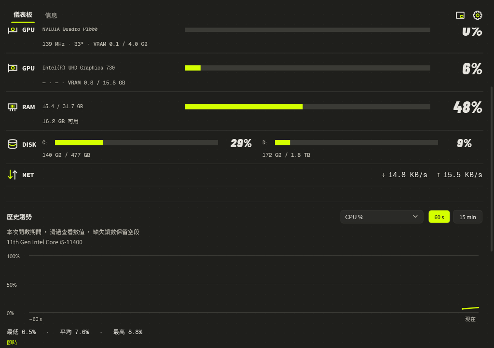
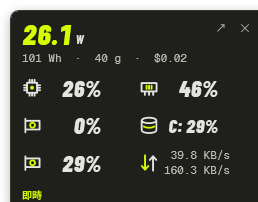
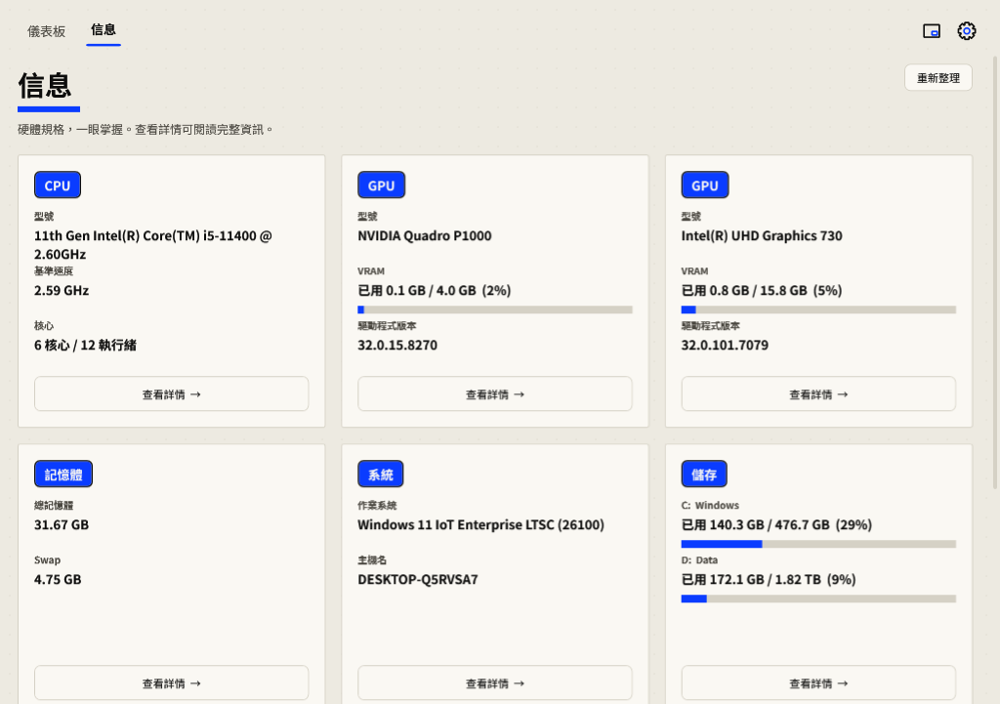
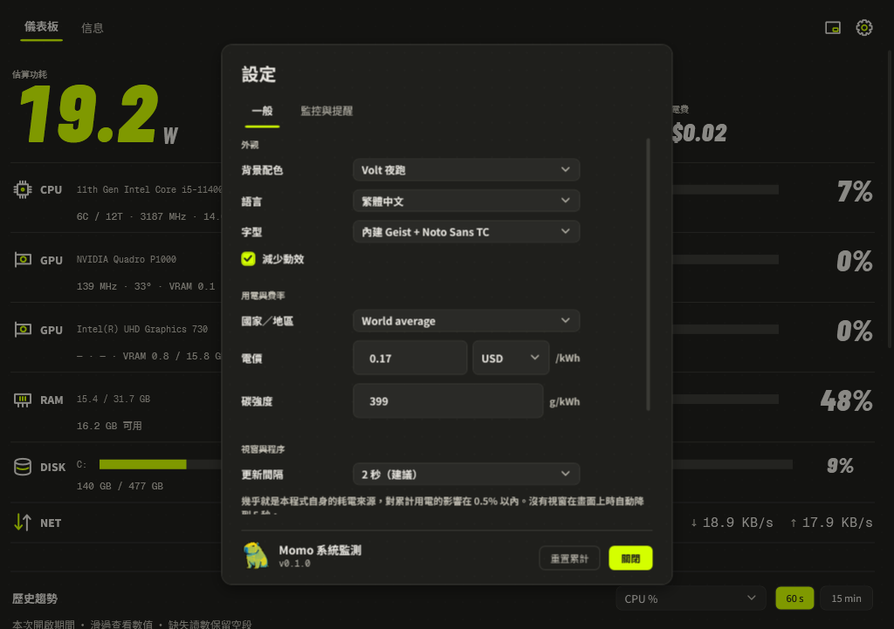

Momo 系統監測 — 使用指南
Windows 11 桌面小工具 v0.1.0 — CPU / GPU / RAM / 網路 / 儲存、風扇、瓦數、用電與碳足跡 · 2026-09-14
Momo 系統監測是一個 Windows 11 桌面小工具，每秒監測整機狀態：CPU / GPU / RAM / 網路 / 儲存、主機板風扇與水冷幫浦、瓦數、累計用電、碳足跡、電費，以及每程式分攤功耗。
整個介面只有一條顏色規則：顏色只表示「這個讀數超標了」。其餘一律使用強調色——粗條共用同一條基準線，長度本身就足以比較。

安裝與執行
前置需求
- Windows 11（x64）
- .NET 8 Desktop Runtime（exe 為 framework-dependent）
- 管理員權限才能讀完整感測器（啟動時 UAC 提示）
建議選裝 —— PawnIO 驅動解鎖 CPU 溫度、風扇與板載電壓，一次性安裝（管理員）：
winget install namazso.PawnIO -e
沒有管理員權限（或 PawnIO）時，溫度 / 風扇 / CPU 瓦數會顯示 —，其餘功能正常。
快速上手
- 儀表板——英雄數字是目前估算瓦數；下方三小格為累計用電 / 碳足跡 / 電費。CPU、GPU、RAM、DISK、NET 各列共用一條基準線。
- 信息——WMI 硬體與系統資訊；固定磁碟收在同一張卡（每顆一列），詳情可複製。
- 設定（齒輪）——語言、國家（一次套用電價／幣別／碳強度）、提醒門檻、顯示選項。
儀表板
各列
- CPU——使用率、套件瓦數（有 RAPL 用實測，否則 TDP 曲線）、時脈、核心數
- GPU——每張卡一列（自動優先獨立顯卡）；溫度、時脈、風扇 RPM、瓦數、負載、VRAM 已用/總量
- RAM——已用 / 總量＋橫條
- DISK——空間佔用率（不是 I/O 忙碌率）；警示條件是「剩餘空間低於門檻」
- NET——上 / 下行速率
- 風扇／幫浦——主機板 SuperIO 風扇與水冷幫浦 RPM
任一條粗條達到門檻（預設 90%；磁碟為剩餘空間下限）就轉警示色——顏色只說這一件事。
Top Processes
依分攤功耗排序的程式清單——CPU/GPU 使用率佔比映射到整機瓦數。顯示筆數在設定調整。
配色：Volt / Paper Pop
設定 → 一般 → 背景配色：Volt 夜跑（深色、螢光強調）或 Paper Pop 日間（米白、鈷藍強調）。同一套排版骨架，只有色票不同；即時套用所有視窗並保留選擇。舊版七個背景自動映射（深海藍 → Volt，其餘 → Paper Pop）。

趨勢圖
60 秒 / 15 分鐘範圍：CPU/GPU 負載、RAM、VRAM、溫度與估算功耗。滑過看時間與數值，標出最低 / 平均 / 最高。歷史只覆蓋本次啟動最近 15 分鐘，重啟不保留；感測缺失或取樣中斷保留空段，不補成 0。

迷你視窗
頁首「迷你」開啟的 258 × 238 速覽面板：圖示代替文字標籤、數值代替橫條——功耗、CPU、主 GPU、GPU 記憶體、最滿磁碟、網路。面板任意處可拖曳（按鈕與置頂勾選框除外），雙擊任意處回主視窗。位置、置頂、「啟動時開啟迷你」都會保留。

提醒
預設：CPU 90 °C、主 GPU 85 °C、RAM/VRAM 90%、固定磁碟剩餘低於 10%。狀態須持續 15 秒才觸發；每次異常只通知一次，恢復後再超標仍受 300 秒冷卻限制。門檻與時間在 設定 → 監控與提醒 可修改（需按「套用」）。該分頁下方保留本次啟動最近 20 筆提醒記錄——Windows 勿擾模式壓掉系統匣通知時，這是唯一的程式內記錄。
不存在的讀數（該 GPU 沒有風扇感測器、該 CPU 沒有溫度）不會觸發提醒。
信息頁
WMI 硬體與系統資訊，只在啟動、進入分頁、切換語言或手動刷新時背景查詢，不每秒重建。固定磁碟收在同一張卡（每顆一列：「已用 X / Y（Z%）」＋橫條，帶磁碟區標籤）。開啟詳情面板可看完整規格並複製，Esc 關閉。

設定與資料
選項
- 語言——English / 繁體中文
- 國家／地區——一次套用電價、幣別與碳強度（France / Germany / UK / USA / China / India / Sweden / Poland / World average / Custom）；事後手動微調會自動變為 Custom
- 顯示程序數、重置累計用電
- 監控與提醒——主 GPU（自動＝優先獨立顯卡）、隱藏內顯、門檻、提醒記錄
- 一般——背景配色、減少動效、系統匣行為

資料檔案
存在 %APPDATA%\StatusMonitor\：
settings.json——所有偏好設定totals.json——累計用電（Wh），跨重啟energy-history.json——每日用電，約 400 天；「今日 / 7 天 / 30 天」由它算出
系統匣：預設按 ✕ 直接結束。開啟「關閉或最小化時留在系統匣」後，✕ 與最小化只是隱藏，背景取樣與提醒繼續；系統匣右鍵永遠有「結束程式」，且走正常關閉流程（累計用電會存檔）。
可攜模式
在 MomoMonitor.exe 旁邊建一個 momo-data 資料夾，三個資料檔案就改存在裡面——設定與累計用電隨程式搬移。沒有這個資料夾則行為不變。第一次以可攜模式啟動時，%APPDATA% 既有資料自動複製過去（只複製到空資料夾，不覆蓋）。
無介面工具
MomoMonitor.exe --dump --out snapshot.json # 取樣一次輸出 JSON MomoMonitor.exe --diag --out diag.txt # 列出所有可見感測器 MomoMonitor.exe --render dash.png # 把儀表板算繪成 PNG
常見問題
為什麼有些讀數顯示 — ？
- 非管理員執行 → 溫度 / 風扇 / CPU 瓦數不可用
- 未安裝 PawnIO → 同上，外加板載電壓
- 該 GPU 沒有風扇感測器（如內顯）→ 風扇 RPM 顯示 —
- 主機板晶片不在 LibreHardwareMonitor 的 SuperIO 支援清單 → 主機板風扇/幫浦顯示 —
為什麼瓦數是估算？
有 RAPL/Nvidia/AMD 感測器的元件用實測；沒有感測器的（磁碟、網路、RAM）用線性模型估算，整機瓦數為總和。每程式功耗是分攤結果，不是直接測量。
是單檔嗎？
是——只有 MomoMonitor.exe（framework-dependent，執行端需 .NET 8 Desktop Runtime）。
授權
GPL-3.0。瓦數估算公式重新實作自 WattSeal（GPLv3）。